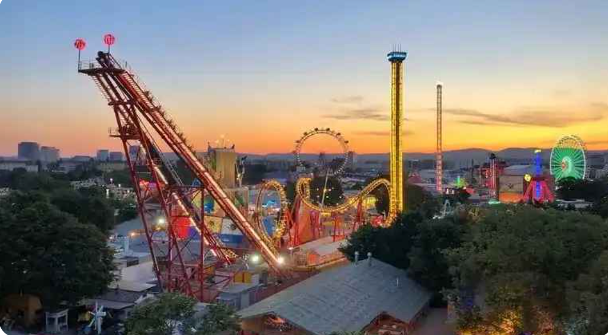

The park is located by the Chennai-Bangalore Trunk Road between Sriperumpudhur and Poonamalle. There is parking for cars. Buses are available from Guindy and T. Nagar. All buses going to Sriperumpudhur from Chennai stop at Queens Land. There are 51 rides, 33 for adults and 18 for children. A child may go on some adult rides if accompanied by an adult
